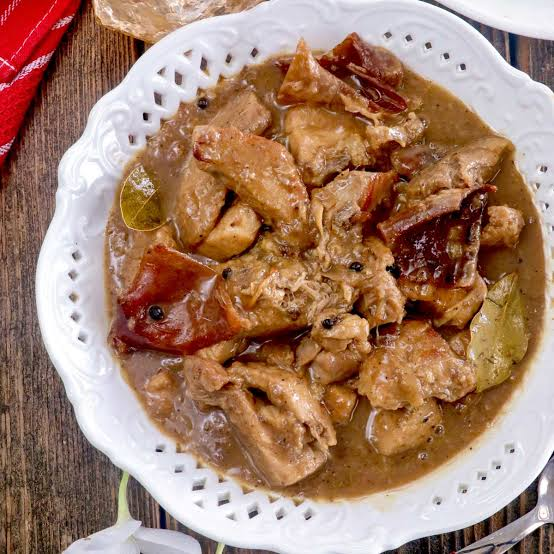

Home
Letchon Paksiw

Description
Lechon Paksiw is a popular Filipino dish made from leftover roasted
pork lechon simmered in a rich, savory, sweet, and slightly tangy sauce.
Cooked with vinegar, garlic, onion, soy sauce, and lechon sauce, this
delicious dish transforms leftover lechon into a flavorful and comforting
meal best paired with steamed rice.
Ingredients
- 1 kg leftover lechon (chopped into serving pieces)
- 1 cup lechon sauce
- ½ cup vinegar
- ½ cup water
- ¼ cup soy sauce
- 1 medium onion (sliced)
- 1 whole garlic bulb (crushed)
- 3 pieces bay leaves
- 1 teaspoon whole peppercorns
- 2 tablespoons brown sugar (adjust to taste)
- 1 tablespoon cooking oil (optional)
- Salt and pepper to taste
Cooking Instructions
-
Prepare the lechon
Cut the leftover lechon into bite-sized pieces.
Set aside the meat and crispy skin.
-
Sauté the aromatics
Heat oil in a pot. Sauté garlic and onion until
fragrant and slightly softened.
-
Add the sauce and seasonings
Pour in vinegar, soy sauce, water, and lechon sauce.
Add bay leaves and peppercorns. Bring to a boil without
stirring for a few minutes.
-
Add the lechon
Add the chopped lechon and brown sugar. Stir
gently to coat the meat with the sauce. Cover and
simmer for 25–35 minutes until tender and flavorful.
-
Adjust and serve
Taste the sauce and adjust the sweetness, sourness,
and seasoning. Simmer uncovered until the sauce
thickens to your desired consistency. Serve hot with steamed rice.